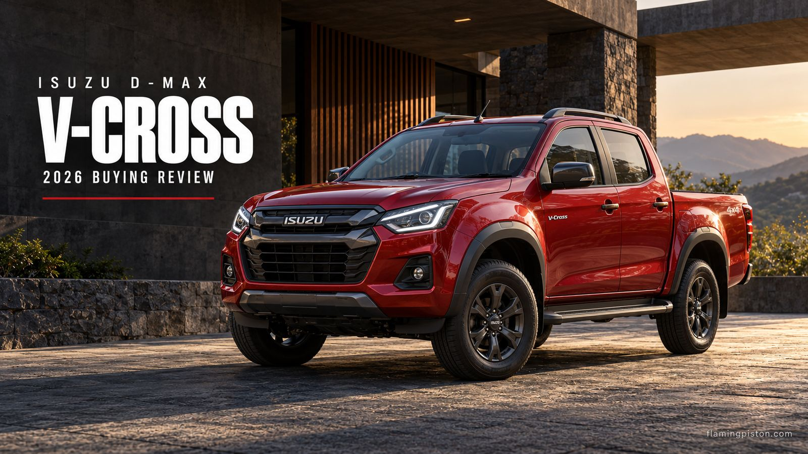

Isuzu V-Cross 2026: Pickup Practicality, 4WD and Which Variant

AI illustration: FlamingPiston
Desk-researched editorial review, checked 23 October 2026. FlamingPiston has not road-tested this vehicle for this article. Manufacturer claims and other publications’ driving findings are identified separately; the judgments and scores below are our editorial assessment.
The V-Cross makes you answer one question before any discussion of screens or leatherette: what are you putting in the bed? If the answer is bulky, dirty equipment that you regularly need to carry separately from passengers, this truck has a purpose. If the answer is usually nothing, you are accepting more than five metres of vehicle for a styling preference. The 2026 equipment update does not change that calculation.
Quick Verdict
A worthwhile pickup shortlist for owners who will use the load bed and 4WD. A much less convincing substitute for an ordinary family SUV. The automatic is the easier everyday recommendation, but parking, cargo security and passenger comfort remain part of the purchase.
1
Price & Variants
Reported range: ₹25.50–30.00 lakh**Ex-showroom, India. Price basis and limitations below.
| Variant / choice | Configuration / basis | Price reference |
|---|---|---|
| 4WD Z manual | 6-speed manual | ₹25.50 lakh reported |
| 4WD Z Prestige manual | 6-speed manual | ₹27.00 lakh reported |
| 4WD Z Prestige automatic | 6-speed automatic | ₹30.00 lakh reported |
Best Value Pick
Z Prestige automatic is our daily-use pick if a pickup is genuinely required. Z manual is the more disciplined capability purchase when clutch work is acceptable. The table uses CarWale’s current ex-showroom listings; Isuzu’s checked page confirms the configurations but not a complete price list. Paint and dealer quotation can change the final figure. This recommendation is therefore conditional on the actual price gap.
2
Exterior Design
The V-Cross looks purposeful because its proportions come from a separate passenger cabin and cargo bed. That visual honesty is its appeal. Our design score recognises the truck’s clear identity, while the practicality score has to account for the same shape’s cost.
Isuzu lists a length of 5,295 mm. That measurement follows you into every parking bay and narrow access road. A surround-view camera can show an obstacle more clearly; it cannot shorten the truck.
3
Interior Design & Comfort
Isuzu highlights an improved rear-seat angle and equipment upgrades. Those are welcome, but a revised seat angle is not proof that the refreshed pickup rides like a passenger SUV. Autocar India’s current overview still identifies urban manoeuvrability as a weakness.
We have not verified a detailed independent comfort test of every 2026 configuration. Our comfort assessment is consequently cautious and based on the published seating update, vehicle format and available model-level assessment. It should not be read as a fresh road-test verdict on suspension tuning.
4
Features & Practicality
The 2026 brochure highlights a 10.3-inch display and surround-view monitoring on applicable specifications. They address real usability needs in a large vehicle, although the trim sheet matters more than the photograph of a top-spec cabin.
The bed measures a published 1,485 × 1,530 × 465 mm internally. Keeping dirty equipment out of the passenger area is the real feature here. Weather protection and secure storage may require additional equipment; cargo dimensions alone do not establish legal payload. Those costs and limits belong in the buying decision before decorative accessories.
| Specification | Published information |
|---|---|
| Engine | 1,898 cc diesel; 120 kW; 360 Nm |
| Current listed transmissions | Six-speed manual or automatic |
| Overall length | 5,295 mm |
| Inner load bed | 1,485 × 1,530 × 465 mm |
5
Performance & Mileage Potential
The 1.9-litre diesel supplies 120 kW and 360 Nm, paired with a six-speed manual or automatic. The current Isuzu table lists four-wheel drive and an automatic differential lock. This is a useful working specification, although we have not tested towing, payload performance or trail capability.
The automatic is the more convenient choice for regular commuting because it removes clutch work. That convenience does not fix the length or prove a particular level of ride comfort.
Autocar’s model-level mileage page reports a 12.4 km/l claim but does not map it clearly to the current variants, and its variant table leaves mileage unavailable. We therefore do not publish that number as a verified 2026 variant claim. Mileage Potential remains unscored until applicable evidence is available; assigning a number here would imply certainty the sources do not provide.
6
Tech & Safety Deep-Dive
The current specification lists six airbags, stability and traction control, hill-descent assistance and ISOFIX. These are useful protections and aids, but we have not verified an applicable crash report for this India-spec 2026 vehicle. An overseas D-Max rating should not simply be transferred to it.
The front-disc and rear-drum arrangement is also a specification, not a measured stopping-distance result. Our equipment assessment can acknowledge the hardware without claiming braking performance we have not measured.
Spec Score: How We Rated It on Paper
Using our Review Methodology, we rate the following eight criteria on paper, using official specifications, prices and published test evidence rather than our own driving.
Seven criteria are assessed below. Mileage Potential is not scored because applicable evidence is unresolved, so no eight-criterion average or final Spec Score is issued. The seven available scores are not averaged into a misleading substitute.
| Criteria | Score |
|---|---|
| Design | 8.0 / 10 |
| Performance | 7.5 / 10 |
| Mileage Potential | Not scored |
| Comfort | 6.5 / 10 |
| Features | 7.0 / 10 |
| Safety | 7.0 / 10 |
| Practicality | 6.5 / 10 |
| Value for Money | 7.0 / 10 |
| Spec Score (average) | Pending |
Why These Scores
Design: Purposeful pickup proportions.
Performance: Useful diesel and 4WD specification; no load or trail test by us.
Mileage Potential: Not scored: current variant-specific efficiency evidence is unresolved.
Comfort: Seating update acknowledged; refreshed ride evidence remains limited.
Features: Useful camera and display updates, depending on trim.
Safety: Safety equipment assessed; applicable India-spec crash result not verified.
Practicality: Useful separate cargo bed, offset by length and storage arrangements.
Value for Money: Conditional value for a genuine pickup user at the reported prices.
7
Verdict
Flaming Piston’s Take
Buy the V-Cross for the separation between passengers and cargo, then decide whether the automatic is worth its premium. Do not buy it expecting the bed to disappear when Monday’s commute begins. It is a purposeful vehicle for a specific routine, and a cumbersome answer to a problem an enclosed SUV could solve more conveniently. Our recommendation remains conditional; the incomplete mileage evidence also prevents a defensible final Spec Score.
Who Should Buy This
- Owners regularly carrying bulky or dirty equipment in a separate bed.
- Pickup buyers with suitable parking and a defined need for 4WD.
Who Should Avoid This
- Families whose cargo is mainly groceries and suitcases.
- Buyers expecting an ordinary SUV’s urban convenience.
FAQs
Is the V-Cross available with an automatic?
Yes. The current official table lists a six-speed automatic in the 4WD Z Prestige.
What is the V-Cross price reference?
CarWale lists ₹25.50–30.00 lakh ex-showroom for the current range. The manufacturer page checked did not provide a complete price matrix; confirm the exact configuration and quotation.
Does the bed size tell me the payload?
No. Cargo dimensions and permissible load are different specifications.
Related Reading
Sources: Isuzu Motors India; CarWale; Autocar India. Checked 23 October 2026. Publication findings are attributed in the text; specifications and availability depend on variant.
Back to reviews